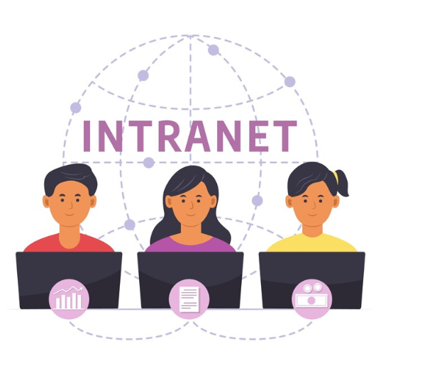

A tecnologia de Ethernet possibilita a conexão física de dispositivos como computadores, impressoras, switches e roteadores em redes locais. O padrão é amplamente empregado para conectar dispositivos por meio de cabos para transmitir informações.
Esta é uma rede exclusiva que os colaboradores utilizam para se comunicar, compartilhar informações e acessar recursos internos da empresa.
Qual é o significado de extranet? A rede extranet utiliza a infraestrutura da internet, mas é restrita a um grupo específico de usuários. Ela permite que usuários autorizados acessem recursos e dados que estão fora da rede interna (intranet) de uma organização, também protegidos por mecanismos de proteção.
